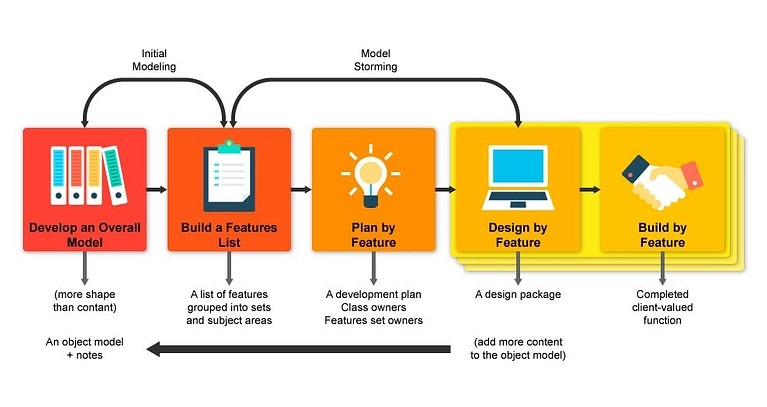

De acordo com os registros, a metodologia foi concebida por Jeff De Luca, estrategista global de Tecnologia da Informação. De Luca foi inspirado nos princípios da modelagem de objetos criada por Peter Coad, um empresário de software norte-americano. A metodologia FDD foi aplicada pela primeira vez em 1997, durante um projeto de desenvolvimento de software para um grande banco em Singapura. Nesse projeto, Jeff entregou um conjunto com cinco processos que atenderam às necessidades do banco, em um projeto de desenvolvimento de software que durou 15 meses e envolveu 50 pessoas. Em seguida, o Feature Driven Development foi utilizado em um segundo projeto que durou 18 meses e envolveu 250 pessoas. A partir disso, a metodologia se tornou popular entre equipes de desenvolvedores de softwares.
O Feature Driven Development (FDD) é uma metodologia ágil de desenvolvimento de software que foi criada por Jeff De Luca em 1997 durante um projeto na Lockheed Martin. Ela se concentra na modelagem e no desenvolvimento de funcionalidades específicas para gerenciar projetos complexos de software. O FDD ganhou reconhecimento internacional devido à sua eficácia e é valorizado por sua abordagem estruturada e sistemática para o desenvolvimento ágil de software. Para isso, o FDD trabalha os projetos a partir de 5 processos: Desenvolvimento de modelo geral; Criação de lista de funcionalidades; Planejamento por funcionalidade; Modelagem por funcionalidade; Construção por funcionalidade. Características do FDD Aqui estão algumas características que tornam o FDD uma ferramenta única: É uma ferramenta iterativa (baseada na repetição, em ciclos); Tem, como base, a criação de produtos de qualidade; Funciona com pequenos e grandes projetos; É uma ferramenta pautada na geração de muitas informações. Foco no processo em si, e não no resultado final; Funciona sob uma abordagem sistemática e simples; Seu método operacional facilita a evolução do processo. O Feature Driven Development (FDD) envolve cinco processos distintos:
- Desenvolver um modelo geral: Nesta fase, a equipe obtém um entendimento abrangente do sistema e cria modelos gerais baseados nesse conhecimento. Pequenas equipes desenvolvem modelos de domínio para áreas específicas, que são posteriormente revisados por membros externos para escolher o melhor modelo para cada área. Esses modelos são unificados para criar um modelo geral do domínio do sistema.
- Gerar uma lista de funcionalidades: Aqui, uma lista de funcionalidades do sistema é criada, cada uma identificando sua área de domínio. As funcionalidades representam tarefas que não devem levar mais de duas semanas para serem concluídas e são priorizadas com base no valor para o cliente.
- Planejar por funcionalidade: Cada funcionalidade é planejada com equipes designadas, incluindo programadores-chefe responsáveis por partes específicas do projeto.
- Modelar por funcionalidade: Nesta fase, são criadas modelagens específicas para cada funcionalidade, com programadores-chefe desenvolvendo classes, métodos e atributos relacionados à funcionalidade. As funcionalidades são submetidas a testes internos.
- Construir por funcionalidade: Finalmente, o código é implementado para as funcionalidades, incluindo a implementação de regras de negócio, inspeção do código, testes unitários e lançamento da funcionalidade. Vantagens de implementar o FDD O Feature Driven Development (FDD) é uma metodologia ágil que oferece vantagens como estruturação, qualidade, adaptabilidade e entrega de valor contínuo ao cliente, tornando-a uma escolha atraente para equipes de desenvolvimento de software.
Por ser um processo repleto de tarefas executáveis, o capital humano envolvido em um projeto FDD é essencial. Aqui está um resumo da equipe necessária para suprir todas as demandas do Feature Driven Development em uma empresa.